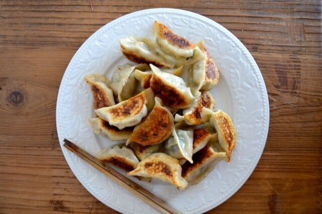

Home
Asian Dumpling Recipe

Description
The only dumpling recipe you'll ever need!
Ingredients
- chives
- ground pork
- shaoxing wine
- sesame oil
- salt
- soy sauce
- white pepper
- dumpling wrappers
Steps
- Chop chives finely.
- In a large bowl, stir together the vegetables, wine, meat, sesame oil, salt, soy sauce, white pepper, and water.
- Wrap dumplings.